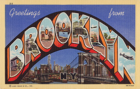
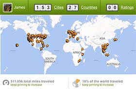
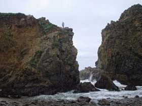

-
Front-end Engineer
At Thismoment, I spend most of my time building, supporting and debugging websites for approximately 1,000 customers through Thismoments Content Management System. I've built a few sites from scratch and have modified existing code per clients requirements. HTML, CSS, jQuery and PHP are used daily.
-
QA Analyst
My time contracting at Intuit involved the testing of a Quickbooks back-end system-wide upgrade. I wrote and executed multiple test plans in an Agile/Scrum environment. Black- and White- box testing methods were used.
-
Business/Financial Analyst
At GFI Group on Wall Street, I started out as a Jr. Accountant and worked my way up through multiple positions: Sr. Accountant, Financial Analyst and Business Analyst for the Energy and Commodities team. I designed and deployed numerous internal global reporting and trading systems for use across multiple offices.
-
Previous...
The very first job I was ever paid to do? Bar back. I was 14 years old. My professional career began at The Associated Press in New York nearly 10 years ago and have bounced around a number of positions trying to find my niche.
-
Ebay
As far back as I can remember, I have always been a 'buy low sell high' kind of guy. I started collecting things when I was about 6 and found out, a few years later, that there were more collectors out there like me. I've been selling collectors items on for nearly 15 years on eBay and have just recently been using it as a fun way to support my own collection.
-
Blog
I only recently began my own blog, with a familiar media-based layout. It's very media-intensive, but if you want to see what I'm currently ruminating on - check it out.
-
Mapaya
A few years ago, a friend and I decided we wanted to build a newer, better version of online classifieds. After some initial paper-napkin sketches, we commissioned a team in India to help our vision come to life. Although it didn't turn out how we had hoped, it was quite a learning experience.
-
San Francisco, CA
PresentMy wife and I moved to San Francisco about 1 month after returning from our 3-month honeymoon throughout Africa and Europe. We've been enjoying the sun (and fog) and the Westside for nearly a year.
-
Lake Tahoe, CA
2010 - 2013After having spent so much time in New York City and the surrounding areas, I needed to get back to my roots. In 2010, We moved back into my parents home in Lake Tahoe and spent a couple of years enjoying mountain life.
- 
Brooklyn, NY
2003 - 2010Most of my family comes from Brooklyn, New York, so it came of no surprise to them when I moved there shortly after graduating from college. I moved there the day after the blackout of 2003 and decided I wanted to move back to the West Coast in 2010.
-
Prior
I grew up in Truckee, California, and spent a bit of time in Cardiff, Wales (UK). After graduating high school, I went to college at the University of California, Santa Cruz, and stayed for about 5 years.
- 
Travel
All told, I've probably spent more than two years of my life on the road. Some of the more notable (backpacking) trips: 2 months in Europe in 2002. 3 months in Asia in 2010. 1 month driving across the country in 2010. 3 months throughout Africa and Europe in 2012.
- 
The Great Outdoors
When I have free time I love to spend it outdoors. Camping, hiking, trail running and biking (road and mountain) are activities I love and actively pursue. I'm sure it has a lot to do with where I grew up. I love jogging around Lands End in the mornings. I also love to play basketball.
-
Thrifting
My mother and I used to spend Saturdays in Lake Tahoe going to thrift stores and garage sales. The things we'd find would never fail to surprise us. It's no wonder I still love thrifting. Plus it's another great way for me to enable my collector habit.
-
Other
I'm a very active reader - my Goodreads profile - and am a huge fan of the Golden State Warriors. I get consumed by TV series on DVD every once in a while. I love commuting to work on my bicycle through the streets of San Francisco.